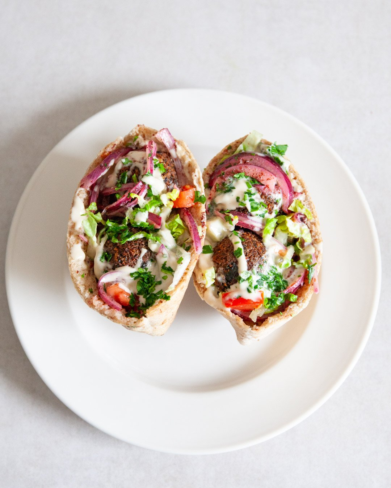

Falafel Pita Sandwich

Description
A pita sandwich is a wonderful way to take your homemade falafel to the next level.
Ingredients
- 16 falafel balls (make before)
- hummus (make before)
- 1 red onion
- 1 tbsp sumac
- 2 lemons
- 2 tbsp extra-virgin olive oil
- 1 little gem lettuce
- 2 large tomatoes
- 1/2 cucumber
- 30g parsley
- 4 pita breads
- 80g tahini
- 4 tbsp lemon
- 1 garlic clove
Steps
- Start by making the falafel and hummus. Keep in mind that you need to start this at least the day before in order to soak the legumes.
- For the pita filling, finely slice the onion and mix the slices together with the sumac, the juice of 1 lemon, the extra virgin olive oil and 1/2 tsp salt. Set aside.
- Finely slice the gem lettuce, dice the tomatoes and cucumber, finely chop the parsley. Set everything aside separately.
- In the meantime, make a quick tahini sauce by mixing the tahini and lemon juice with 1 tbsp of water and 1/2 tsp salt. Mix it together until thickened, then keep adding small amounts of water until you can drizzle the tahini from a spoon. Then serve alongside the falafel.
- Re-heat the pita breads either in the oven or the toaster. Then cut open the breads and spread a thick layer of hummus inside. Add a bit of the onions, lettuce, tomatoes, cucumber and parsley, followed by 2 falafel balls. Finish with generous drizzle of the tahini sauce, an extra squeeze of lemon juice and a bit more parsley. Tuck in.